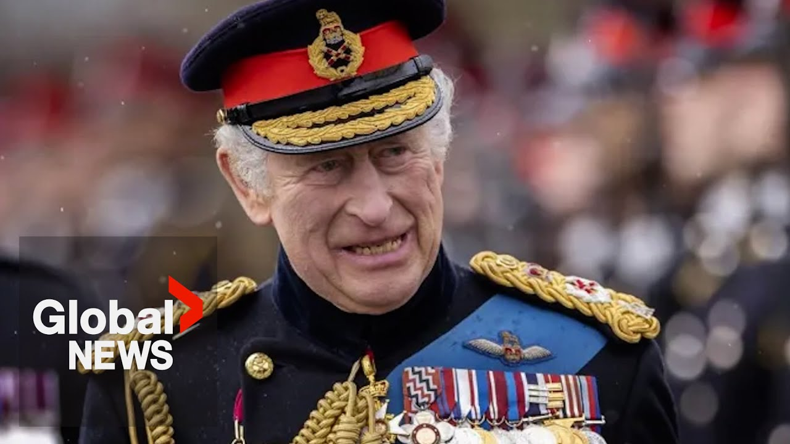

【查尔斯国王的王座演讲是加拿大主权的“有力象征”】
Summary: King Charles' visit symbolizes Canada's sovereignty and historic ties to the British monarchy, countering Donald Trump's vision, while Washington shifts focus to restoring relations.
摘要： 查尔斯国王的访问象征着加拿大主权及与英国君主制的历史联系，同时抵制唐纳德·特朗普的设想，而华盛顿则将重点转向恢复关系。

⏱️ Estimated Reading Time: 3 min
When King Charles stopped at Canada House in London on Tuesday, he was shown a large floor map of the country.
周二，查尔斯国王在伦敦的加拿大之家停留时，他看到了一幅巨大的该国地面地图。
It was a prelude to a visit that will demonstrate Canada's historic ties to the British monarchy.
这是此次访问的序幕，将展示加拿大与英国君主制的历史联系。
More importantly, it will symbolize this country's distinct sovereignty in North America.
更重要的是，它将象征这个国家在北美独特的主权。
This is an historic honor which matches the weight of our times.
这是一项与时代分量相称的历史性荣誉。
The king's presence will be a counterweight to Donald Trump's vision.
国王的存在将是对唐纳德·特朗普设想的制衡。
That clearly underscores the sovereignty of our country.
这清楚地强调了我国的主权。
Charles is going to be here as the king of Canada.
查尔斯将以加拿大国王的身份来到这里。
We're going to hear that language a lot.
我们会经常听到这种说法。
I think it's to help remind President Trump that the king is actually our king.
我认为这是为了提醒特朗普总统，国王实际上是我们的国王。
It is a strong symbol of our sovereignty.
这是我们主权的有力象征。
See the conflict.
看看这种冲突。
There are signs that President Trump may be backing off the idea of Canada becoming a US state.
有迹象表明，特朗普总统可能正在放弃将加拿大变成美国一个州的想法。
It was dismissed cordially by the prime minister.
总理礼貌地驳回了这一想法。
Having met with the owners of Canada over the course of the campaign last several months, it's not for sale.
在过去几个月的竞选活动中，与加拿大的所有者会面后，加拿大不会出售。
Won't be for sale ever.
永远不会出售。
Trump has not taken a serious run at it since.
此后，特朗普没有再认真尝试过。
Even when promoting a joint Golden Dome Defense Shield.
即使在推动联合金顶防御盾牌时也是如此。
Washington's new ambassador suggests talk of the 51st state is over.
华盛顿的新任大使暗示，关于第51个州的讨论已经结束。
He recently told B7 leaders he likes Mark Carney's description of Canadians as owners of the country.
他最近告诉B7领导人，他喜欢马克·卡尼将加拿大人描述为国家的主人。
The owners, okay, really, they are the owners of Canada.
主人，没错，他们确实是加拿大的主人。
It's a great way to describe the people that we work for.
这是描述我们所服务的人民的好方式。
In Ottawa on Friday, a group of US senators said they just want to restore good relations.
周五在渥太华，一群美国参议员表示他们只想恢复良好关系。
There's been a lot of heartbreak about the disruption in that.
关于这种中断，有很多心痛。
The group, including a Republican senator, talked only of trade, not a takeover.
包括一名共和党参议员在内的小组只谈贸易，不谈接管。
We have a 5,000mi long border.
我们有5000英里长的边界。
That's a long border, but our friendship is a lot longer.
那是一条很长的边界，但我们的友谊更长。
Still, when Charles visits Canada this week, the world, including Washington, will be watching.
尽管如此，当查尔斯本周访问加拿大时，包括华盛顿在内的世界都将关注。
Every gun salute, every mounted policeman, every waving flag will have greater symbolic meaning than usual.
每一次鸣枪致敬、每一位骑警、每一面飘扬的旗帜都将比往常具有更大的象征意义。
And having the throne speech delivered by the king himself, who is Canada's head of state, will send a clear message to Washington.
而由加拿大国家元首国王本人发表王座演讲，将向华盛顿发出明确的信息。
We're not like you and we will keep it that way.
我们与你们不同，而且我们将保持这种状态。
Eric Sorenson, Global News, Toronto.
埃里克·索伦森，环球新闻，多伦多。